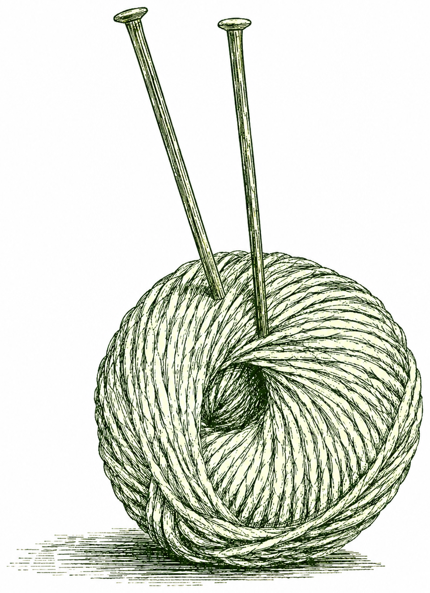

Current Work

Some Inference Perils of Imposing a Taylor Rule
with Paul Beaudry and Andrew Preston, March 2023
Latest version (also CEPR DP18001)
Abstract
The way monetary policy is conducted is a key element in New Keynesian models, and crucially determines allocations properties. We show that assuming monetary authorities follow a Taylor rule may bias estimation of New Keynesian type models for two reasons. The first one is theoretically trivial, and is a standard misspecification bias that occurs if the actual conduct of policy does not follow the model specified Taylor rule. The second one is more subtle, and we refer to it as a determinacy bias. It occurs when wrongly assuming a Taylor rule restricts the set of admissible model deep parameters when one requires the equilibrium to be determinate, as is almost always the case in the applied literature. Using US data, we show that the determinacy bias is a serious problem in small scale New Keynesian models, as the slope of Phillips curve is biased upwards. The misspecification bias is a serious problem when estimating a medium-scale model, as it affects the contribution of the various shocks to macroeconomic fluctuations. We propose an alternative agnostic specification of the policy rule that is immune to both misspecification and determinacy biases.
Dynamic Identification in VARs
with Paul Beaudry, Fabrice Collard, Patrick Fève and Alain Guay, November 2022
Latest version (also CEPR DP17726)
Abstract
We prove that the dynamics structure of Dynamic Stochastic General Equilibrium models brings enough restrictions to generically identify structural shocks in a Vector Autoregressive model. We denote this representation a D-SVAR. We show that the estimation of the D-SVAR is a hidden step in a full information estimation of a DSGE model. We then show the interest of such a structural representation by mean of examples.
How Do Strategic Complementarity and Substitutability Shape Equilibrium Dynamics?
with Paul Beaudry and Dana Galizia, June 2024
Abstract
Macroeconomic dynamics are shaped by how individual incentives to spend and accumulate interact with the decisions of others. The goal of this paper is to identify—within a simple large-game-theoretic structure—which types of agent interactions favor which types of dynamic equilibrium outcomes. In particular, we extend Cooper and John [1988] to a dynamic setting to clarify the role of strategic complementarity and substitutability in delivering dynamics such as monotonic convergence to a unique steady state, hysteresis, endogenous cycles, and indeterminacy.
Comparing Two Methods for the Identification of News Shocks
with Paul Beaudry and Atılım Seymen, 2013
Working paper version (ZEW Discussion Paper No. 13-110)
Abstract
Recent empirical literature delivered, based on different structural VAR approaches, controversial results concerning the role of anticipated technology—news—shocks in business cycle fluctuations. We deal with this controversy and investigate (i) the extent to which two prominent structural VAR approaches can be useful in recuperating news shock dynamics from artificially generated data in general and (ii) why and to what extent these SVAR approaches differ in the results they deliver in particular. Thereby, we provide several insights for the users of both VAR techniques with small samples in practice.
Monetary policy and herd behavior in new-tech investment
with Olivier Loisel and Aude Pommeret, 2010
newest version (April 1, 2012)
Abstract
We study the role of monetary policy when asset-price bubbles may form due to herd behavior in investment in a new technology whose productivity is uncertain. To that aim, we build a simple general-equilibrium model whose agents are households, entrepreneurs, and a central bank. Entrepreneurs receive private signals about the productivity of the new technology and borrow from households to publicly invest in the old or the new technology. Monetary policy, by affecting their cost of resources, can make them invest in the new technology if and only if they receive an encouraging private signal about its productivity. In doing so, it makes their investment decision reveal their private signal, and therefore prevents herd behavior and the asset-price bubble. We show that such a `leaning against the wind’ monetary policy, contingent on the central bank’s information set, may be preferable to laisser-faire, in terms of ex ante welfare, even though the central bank has less information than private agents on the productivity of the new technology.